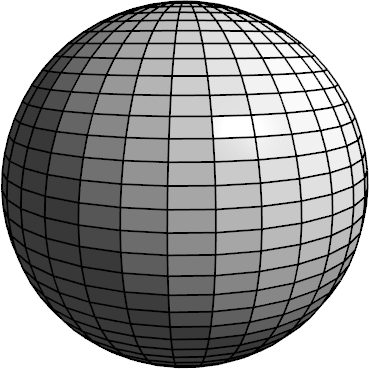
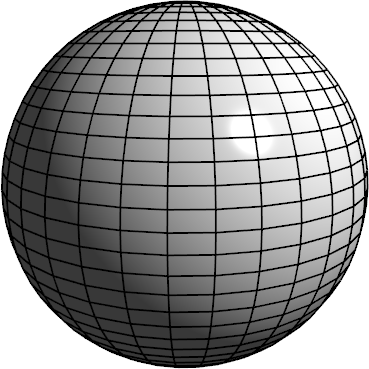
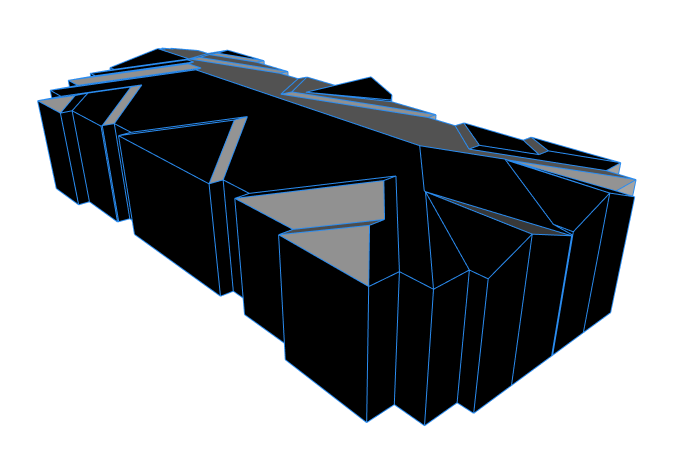
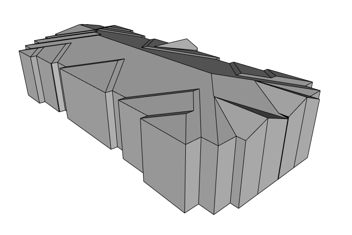

setNormals operation
Syntax
setNormals(normalsMode)
Parameters
- normalsMode (selector)
hard Use the face normals. This is equivalent to softenNormals(0). conform Same as hard. Computes consistent normals using the connectivity and a heuristic that favors the world's up direction. soft For each vertex, use the average of the adjacent face normals. This is equivalent to softenNormals(180). auto Same as soft. Edges where face normals meet at an angle greater than or equal to 30 degrees are shaded as hard edges. This is equivalent to softenNormals(30).
The soft and auto modes require disconnected shapes to be combined and duplicate vertices to be merged in order to compute vertex normals using adjacent face normals.
The conform mode is not successful is every case.
If the conform mode is not successful consider the following options:- Combine disconnected shapes belonging to a single building.
- Merged vertices and remove duplicate faces using cleanupGeometry(faces, 0.1) operation.
- In case of discontinous textures not all duplicate faces are removed. Consider deleteUV operation.
Description
The setNormals() operation sets the normals of the current shapes' geometry to the desired mode.
Related
- softenNormals operation
- cleanupGeometry operation
- convexify operation
- innerRectangle operation
- mirror operation
- reduceGeometry operation
- reverseNormals operation
Examples
Shaded Sphere
|

|

|
Consistent normals
|

|

|
Copyright ©2008-2021 Esri R&D Center Zurich. All rights reserved.